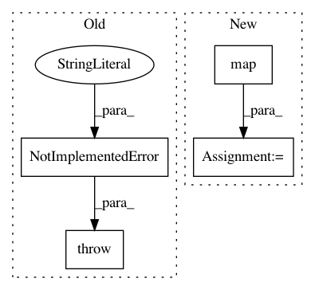

d364facfdecaf5874b85bca3f7f0b2832e3483a2,tests/test_regressor/test_residuals.py,TestPredictionError,test_peplot_shared_limits,#TestPredictionError#,135
Before Change
Test shared limits on the peplot
raise NotImplementedError("not yet implemented")
@pytest.mark.skip(reason="not implemented yet")
def test_peplot_draw_bounds(self):
After Change
visualizer.finalize()
xlim = tuple(map(int, visualizer.ax.get_xlim()))
ylim = tuple(map(int, visualizer.ax.get_ylim()))
assert xlim == ylim
@pytest.mark.filterwarnings("ignore:internal gelsd driver lwork query error")
def test_peplot_no_shared_limits(self):
In pattern: SUPERPATTERN
Frequency: 3
Non-data size: 4
Instances
Project Name: DistrictDataLabs/yellowbrick
Commit Name: d364facfdecaf5874b85bca3f7f0b2832e3483a2
Time: 2018-06-18
Author: benjamin@bengfort.com
File Name: tests/test_regressor/test_residuals.py
Class Name: TestPredictionError
Method Name: test_peplot_shared_limits
Project Name: bethgelab/foolbox
Commit Name: 7354ffe0d8914caf96d8ebd089c03c1a89326097
Time: 2019-07-19
Author: rzrolandzimmermann@gmail.com
File Name: foolbox/batching.py
Class Name:
Method Name: run_parallel
Project Name: uber/petastorm
Commit Name: 947b1a35c7762e8805e0dc69acea414ce4ee9b1c
Time: 2020-04-20
Author: selitvin@users.noreply.github.com
File Name: petastorm/tf_utils.py
Class Name:
Method Name: make_petastorm_dataset